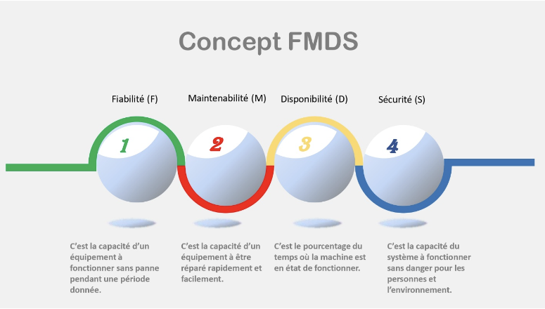

Dans l’Industrie 4.0, la maintenance devient prédictive grâce à l’analyse FMDS (Fiabilité, Maintenabilité, Disponibilité, Sécurité) et aux données temps réel.
Objectif : réduire les arrêts imprévus, optimiser les coûts et augmenter la sécurité.
En savoir plus sur la maintenance prédictive →Comment combiner FMDS et IA pour anticiper les pannes, réduire les coûts et améliorer la disponibilité industrielle ?
Exemples concrets de gains en maintenance prédictive →Approche hybride : Scrum (agilité) + Cycle en V (rigueur) + outils IA (Python, MATLAB).

Vidéo explicative FMDS & Industrie 4.0 →